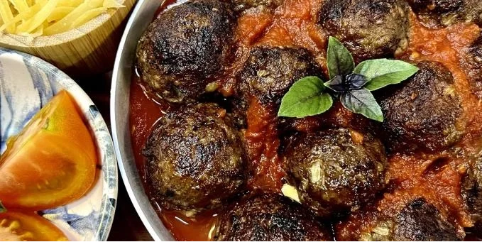

The Fork
Saladas
Massas
Carnes Vermelhas
Aves
Peixes e Frutos do Mar
Lanches
Doces
Bolos e Tortas
Sobre
Contato
Almôndegas Recheadas

Receita de Almôndegas Recheadas deliciosa feita com MAGGI Grill, queijo prato e farinha de rosca.
Dificuldade
Porções
Tempo total
Fácil
10 Porções
20 minutos
Utensílios
Frigideira
Batedor
Ingredientes
600 g de carne moída
1 cebola picadinha
2 dentes de alho picadinhos
1 ovo
5 colheres (sopa) de farinha de rosca
1 colher (chá) de MAGGI® Grill
1 colher (chá) de sal
300g de queijo prato em cubinhos
2 colheres (sopa) de azeite
Modo de Preparo
Com exceção do queijo prato, misture todos os ingredientes até ficar homogêneo.
Faça as bolinhas no tamanho desejado, abra na palma da mão e recheie com o queijo.
Feche e boleie.
Frite no azeite e sirva com seu molho de tomates preferido.